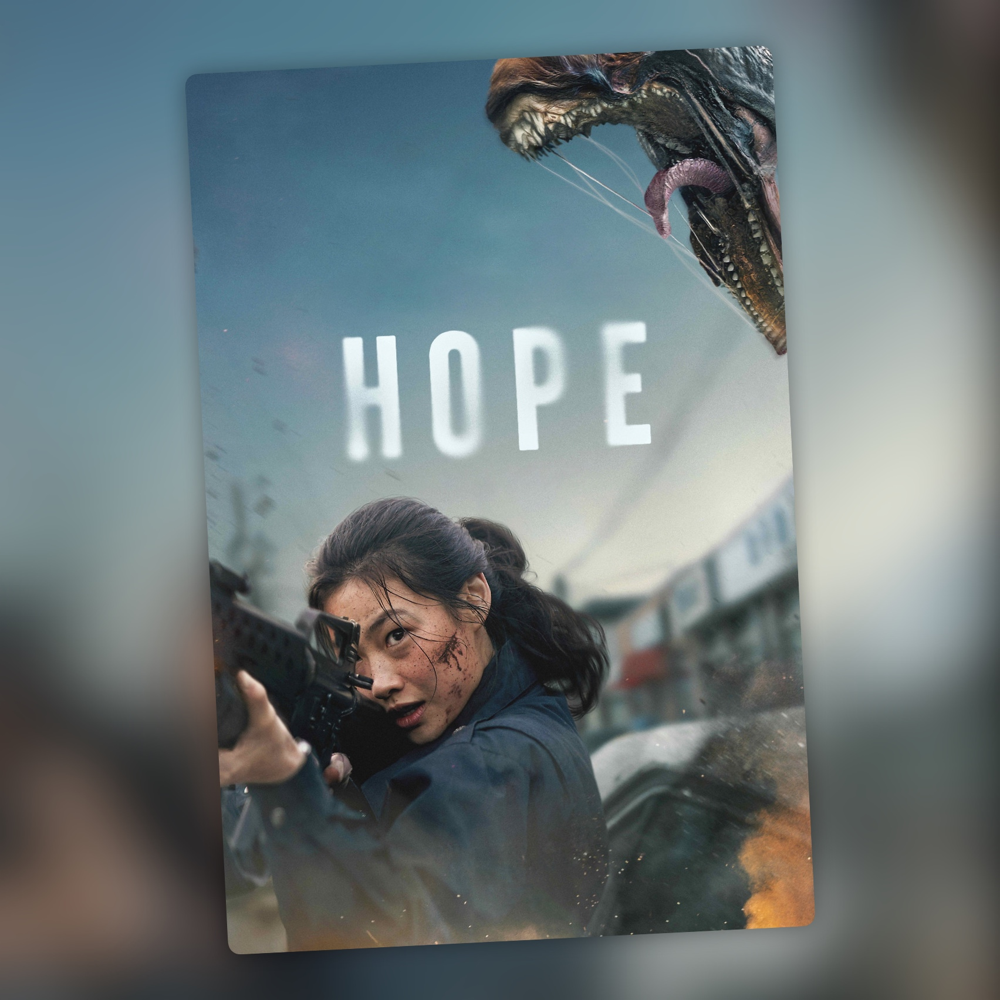

Hope (2026)
Dos horas y media persiguiendo a algo que no deja de correr

Hope es una persecución constante. Durante la primera hora y media seguimos al jefe de policía de un pueblo costero y a una de sus agentes, que intentan dar caza a una criatura que lo está destrozando todo. Y cuando digo destrozando, es destrozando de verdad: Na Hong-jin no se corta con la violencia, la sangre ni las muertes. Al principio ni siquiera la vemos. Vamos detrás del rastro que deja, y lo que arranca como una investigación se va convirtiendo en una carrera desesperada por sobrevivir.
Cuando por fin conocemos el origen de la criatura, la historia cambia de escenario y de protagonistas. Pasamos a los hombres que se habían adentrado en el bosque para cazarla y que acaban descubriendo que las cosas son bastante distintas de lo que imaginaban. Ahí empieza otra persecución de más de media hora, esta vez entre árboles, caballos y disparos, hasta un desenlace que deja muchas cosas abiertas.
Na Hong-jin escribe y dirige. Es el responsable de The Chaser, The Yellow Sea y El extraño, tres películas que ya daban una buena idea de su gusto por la violencia y por las situaciones que se descontrolan. No estrenaba nada desde 2016 y a Hope le ha dedicado unos ocho años. Aquí cambia de escala y se mete de lleno en la ciencia ficción y el cine de monstruos, con una producción mucho más grande que cualquiera de las anteriores.
Lo que más me ha impresionado es cómo está rodada. El manejo de la cámara durante las persecuciones es una barbaridad. Va pegada a los personajes, corre con ellos, esquiva obstáculos y se mete en medio del caos, casi siempre con angulares que dejan ver todo lo que pasa alrededor. Hay muchos planos largos de seguimiento, de los que no cortan cuando la cosa se complica, y sabes en todo momento dónde está cada uno y hacia dónde corre, aunque la película vaya a toda velocidad. Además, casi todo ocurre de día y con luz natural. La fotografía es de Hong Kyung-pyo, el de Parásitos y Burning, que ya había trabajado con Na en El extraño.
Para rodar así contaron con XM2, un equipo de filmación especializado que ha trabajado en las sagas de James Bond, Misión: Imposible y John Wick. Montaron cámaras delante y detrás de los coches y encima de los caballos. También utilizaron bicicletas eléctricas con un brazo para la cámara, cables, un coche teledirigido y un raíl capaz de moverla a 200 km/h. Na lo explicaba de una forma muy simple: esa velocidad solo sale si asumes riesgos de verdad y mueves la cámara deprisa.
Las secuencias del bosque son especialmente buenas. Se rodaron en Rumanía, en el Parque Nacional de Retezat, porque Na quería un bosque de verdad y no un decorado. Zo In-sung se preparó durante meses para montar a caballo y cuenta que, en algunos planos, los jinetes del equipo galopaban a su lado entre los árboles mientras llevaban la cámara en la mano. Viéndolas, parece que todo el mundo está a punto de salir volando por los aires.
Las criaturas tienen momentos muy conseguidos, y eso que la película no se lo pone fácil: al pasar casi todo de día, no hay oscuridad donde esconderlas. Hacia el final hay algunos planos en los que los efectos flojean y se nota demasiado el ordenador. Es prácticamente la única pega que le pongo.
Na contó en un coloquio con Bong Joon-ho que en posproducción quitó unos doscientos tacos y que aun así quedaron más de cien. La mitad, según él, eran improvisaciones de los actores. Viendo cómo se comportan los personajes cuando todo se va al infierno, no cuesta entenderlo. La película tiene ese humor negro que aparece en mitad de las situaciones más salvajes y que ayuda a que el conjunto no se tome demasiado en serio.
Hwang Jung-min, que ya estaba en El extraño, es el jefe de policía de la primera parte, y Zo In-sung toma el relevo cuando la historia se va al bosque. Jung Ho-yeon demuestra que se desenvuelve muy bien en la acción. Entre los nombres internacionales están Michael Fassbender, Alicia Vikander y Taylor Russell. La música de Michael Abels, el compositor de Déjame salir y Nop, mantiene la tensión de las persecuciones.
Hope termina con bastantes preguntas en el aire. Na ha contado que ya tiene escrita la continuación y que la rodará si surge la oportunidad, aunque de momento no hay nada cerrado. Después de lo que vemos aquí, no me extraña que quiera volver a este mundo.
Dos horas y media de persecuciones, violencia, sangre y muertes tremendas. Me encanta cómo rueda Na Hong-jin y la manera en que consigue tenerte metido en la acción durante tanto tiempo. Los efectos del final tienen algún tropiezo, pero me da bastante igual. He disfrutado muchísimo con Hope. Acabé agotado, con una sonrisa y con ganas de que llegue la siguiente.
Ficha técnica
- Título original: Hope (호프)
- Dirección: Na Hong-jin
- Guion: Na Hong-jin
- Reparto principal: Hwang Jung-min, Zo In-sung, Jung Ho-yeon, Michael Fassbender, Alicia Vikander, Taylor Russell y Cameron Britton
- Año: 2026
- Duración: 157 min
- Plataforma(s) actual(es) en España: no disponible en streaming (en cines desde el 30 de octubre de 2026)